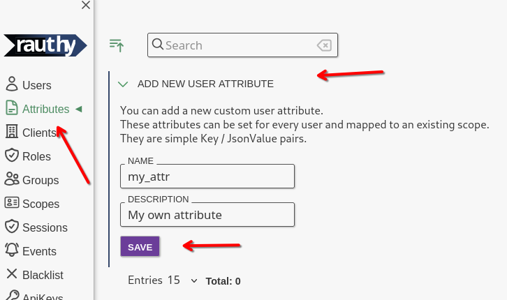
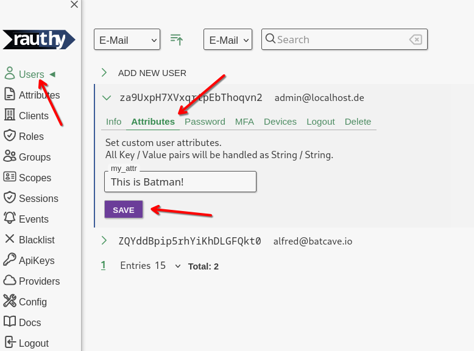
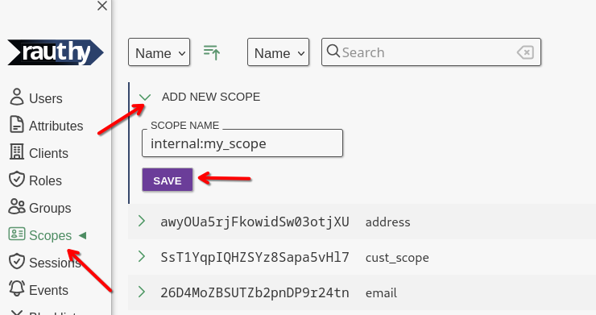
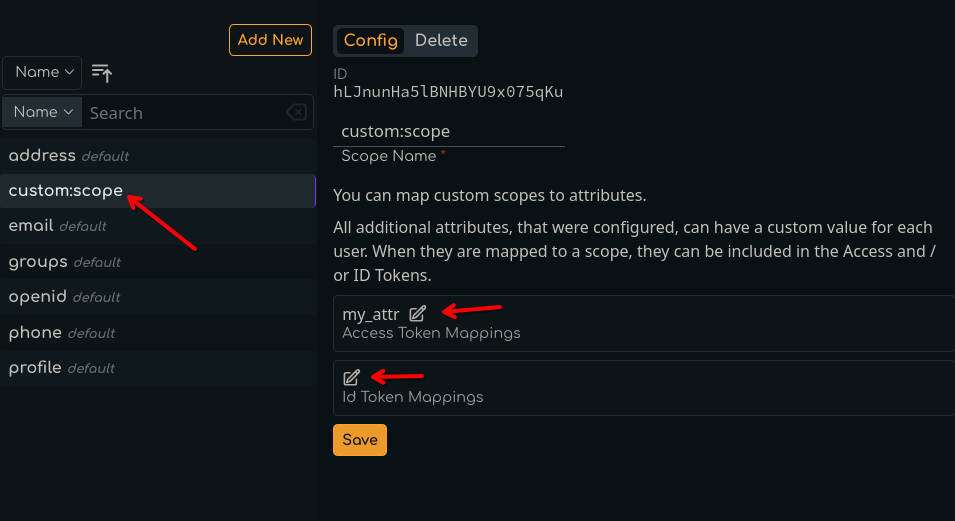
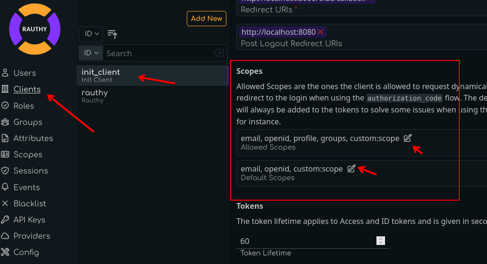

Custom Scopes and Attributes
OpenID Connect defines quite a few very useful claims to be included in the id_token as additional information about
a user. However, there are times when you need other data as well, and maybe it is data that multiple downstream
applications need, like for instance an internal employee ID.
Rauthy can handle this as well. There are custom scopes you can create. These do not get mixed up with the default scopes, so they can't interfere, which makes the whole setup pretty easy.
Values are mapped as claims into tokens only if allowed an requested for an individual client. This means even if you set a value for a user, it will not just end up in the token automatically. Let's walk through how you can achieve that.
Custom User Attribute
The first thing we will do is to create a custom user attribute. Rauthy does not allow you to just enter anything you like. All values are strictly typed and must be pre-configured to prevent user error during normal operation. For instance, you won't be able to do typos, don't need copy & paste from other entries, and so on.
In the Admin UI, navigate to Attributes -> Add New User Attribute

The description is optional and can be changed at any time without any impact. The name of the attribute will be the
exact same in the JWT token later on.
Set User Values
Now that we created our custom attribute in the step above, we can set them for users. Navigate to a user of your
choice, expand the entry and choose the Attributed tab.

The custom values for users are always interpreted, saved and returned Strings without any further validation.
Create a Custom Scope
The next thing we need is a custom scope we can map attributes to. You are not allowed to modify the OIDC default scopes, but you can add your own ones, as many as you like. This is the first step we need to do. Navigate to the
Admin UI -> Scopes -> Add New Scopes

After saving, expand your just created scope. You want to map your attribute from the step before into JWT tokens
when a client requests (and is allowed to) this scope. For instance, let's add our new attribute to the id_token
with this custom scope.

We are almost done.
Allow Scope for Client
The very last step is one you probably know. A client needs to be allowed to request certain scopes in the first place. From this point on, the new custom scope behaves like any default one. We need to allow it for a client to be requested.
Open the configuration for any Client and scroll down until you see the Allowed Scopes and Default Scopes section.

The Allowed Scopes are the ones a client is allowed to request when redirecting a user to the authorization endpoint
to initiate the authorization_code flow. The Default Scopes are the ones that Rauthy will simply always add. This is
useful for instance when you are using client_credentials or another flow, because only the authorization_code
flow can request specific scopes while all others can't.
Finish
That is it. It seems like many steps to follow, but it is to your advantage. With this setup you have type-safety and the most flexibility about which client can see which values in which context, and so on.
When you have done everything right, you will see your new custom value in the custom section of the JWT token claims.
I used the rauthy client in this example (which you should not mess with when deployed).
{
"iat": 1721722389,
"exp": 1721722399,
"nbf": 1721722389,
"iss": "http://localhost:8080/auth/v1",
"sub": "za9UxpH7XVxqrtpEbThoqvn2",
"aud": "rauthy",
"nonce": "Fars0wPqrm9f6XimDKD08CPl",
"azp": "rauthy",
"typ": "Id",
"amr": [
"pwd"
],
"auth_time": 1721722389,
"at_hash": "Hd5ugcSzxwl1epF7Il3pEpq0gznnqs2SnSVZCdNw0EI",
"preferred_username": "admin@localhost.de",
"roles": [
"rauthy_admin",
"admin"
],
"custom": {
"my_attr": "This is Batman!"
}
}